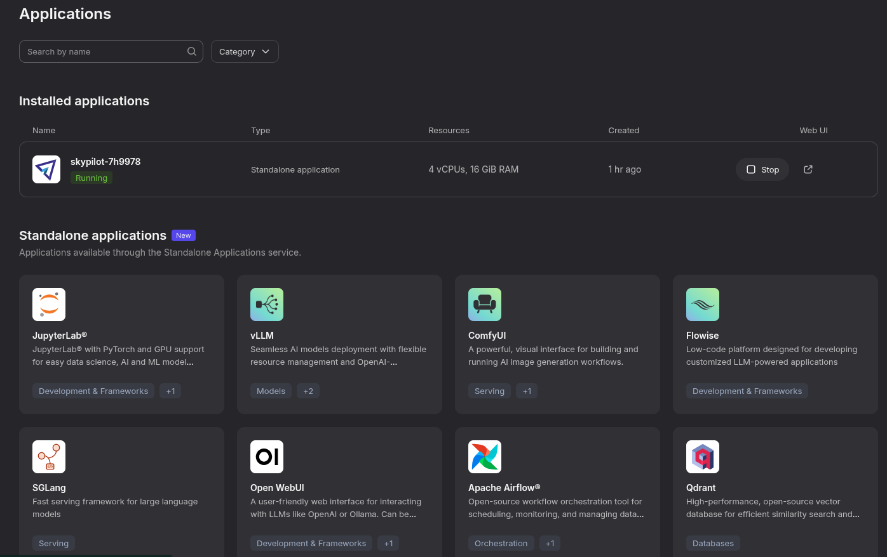
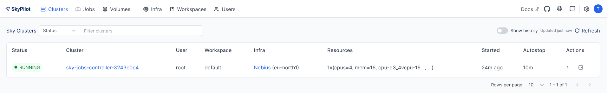
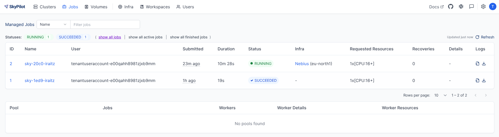

When running experiments — whether large-scale quantum simulations or heavy AI workloads such as model training and fine-tuning — managing compute, data, and software environments becomes the dominant operational task. Small, interactive hosted notebooks (for example, Google Colab or Kaggle Notebooks) are great for prototypes and small-scale work, but they quickly hit limits: GPU availability, quota restrictions, data locality, or the need for repeatable, reproducible environments.
At larger scale teams typically choose one (or a mix) of the following approaches: managed cloud services, on-premise batch schedulers, container-orchestration systems, or specialized distributed runtime frameworks. Each option has trade-offs in cost, complexity, and developer ergonomics. Below I summarize the common approaches, the pros/cons of each, and where a tool like SkyPilot can simplify life.
Workload managers
Slurm — a widely used batch scheduler for HPC centers (Slurm project). Pros: mature, robust for tightly-coupled MPI/HPC workloads, good for fixed-cluster access control. Cons: cluster administration burden, less native support for cloud elasticity and modern container workflows.
Kubernetes — container orchestration for cloud-native workloads (Kubernetes). Pros: standard for microservices and containerized workloads, strong ecosystem (Helm, operators), can run on many clouds and on-prem. Cons: operational complexity for long-running GPU jobs and gang-scheduling; networking and storage need careful design for ML workloads.
Apache Spark — a distributed data processing engine (Spark). Pros: great for large-scale data pipelines and ETL, integrates well with data lakes. Cons: not optimized for iterative GPU-based training workflows — more focused on CPUs and data-parallel transformations.
Ray — a flexible distributed execution framework for Python (Ray). Pros: convenient for hyperparameter search, RL, and custom distributed Python tasks; integrates with many ML libraries. Cons: still operationally more complex than single-node runs; distribution semantics differ from Slurm/Kubernetes.
Dask — parallel computing in Python for data analytics (Dask). Pros: easy CPU-scale-out for pandas-like workloads; integrates with cluster managers. Cons: GPU and ML-job support requires extra tooling (e.g., RAPIDS) and cluster configuration.
Choosing between these often comes down to the team’s constraints: existing cluster investments, familiarity, security/compliance requirements, and whether the workload needs cloud elasticity or low-latency interconnects.
On-prem, cloud and hybrid
On-prem: ideal when data cannot leave premises (regulatory/compliance), or when you have dedicated hardware and a predictable workload. Pros: full control, potentially lower long-term cost for stable demand. Cons: high upfront investment and ops burden.
Cloud (AWS, GCP, Azure): elastic, quick to provision, pay-as-you-go. Managed services (e.g., AWS Batch, Vertex AI, Azure ML) simplify infra but can create vendor lock-in and unpredictable costs if not managed closely.
Hybrid / Multi-cloud: mixes on-prem and cloud to balance cost and capacity. Pros: flexibility and burst capacity. Cons: increased complexity (networking, identity, data sync).
Important cross-cutting concerns:
- Reproducibility & environment management: containers (e.g., Docker) or reproducible environment specs reduce “it works on my machine” problems. For HPC, Singularity / Apptainer can be preferable.
- Data locality: moving terabytes to the cloud is expensive; sometimes compute must be near data.
- Cost management: cloud spot/preemptible instances can save 3–6x but require preemption recovery strategies.
When teams struggle
Many groups find themselves spending more time on provisioning, instance types, SSH access, dependency installs, and retry logic than on experiments. Common pain points:
- Choosing instance families (A100 vs V100 vs RTX) and regions.
- Handling preemptible/spot instance interruptions.
- Syncing large datasets and avoiding repeated installs.
- Using the same workflow for local dev, on-prem clusters, and cloud VMs.
These frictions are why higher-level tooling that abstracts providers and clusters can be attractive. There are some services like Modal that may simplify remote execution but in some cases you might need to have a holistic approach to all those resources.
Enter SkyPilot
SkyPilot is an open-source project (originating from the Sky Computing Lab at UC Berkeley) that provides a unified interface to run jobs on a wide range of infrastructure: Kubernetes, Slurm, and 20+ cloud/backends including AWS, GCP, Azure, RunPod, Paperspace, Lambda Cloud and more.
Why SkyPilot can be useful:
- Single interface for many backends: write your job once (YAML or Python API) and run it on VMs, pods, or Slurm nodes without rewriting deployment scripts. The SkyPilot YAML describes resources, setup steps, and run commands and is portable across providers (YAML spec).
- Automatic provisioning and retries: SkyPilot will find available and cheaper infra, provision nodes (VMs or pods), sync your workdir, run setup commands, and recover from common provisioning failures.
- Spot / preemptible support: built-in support for spot instances and automatic recovery can yield substantial cost savings (managed jobs & spot examples).
- Local dev ergonomics: it supports SSH into pods/VMs, code sync, and reproduces a local development flow on remote infra.
- Multi-cloud and hybrid: useful when you want to burst to cloud providers while still using on-prem resources or multiple clouds to avoid capacity limits.
So, I decided to this it out on nebius as it is one of the many supported providers and I had already by mistake introduced some credits on it.

Nebius has an Applications section where you can easily deploy one of the common usual suspects. Skypilot is available so that one can simply log in after it has been deployed.
It will tell you how to connect vía command line and thus gain access to the platform via Skypilot.

Then it is simply a matter of defining your job and the infra that is required in a YAML file that SkyPilot will use to create the required infra in the infra available (and failling back to the second best choice if needed).
resources:
# Optional; if left out, automatically pick the cheapest cloud.
infra: nebius
infra: aws
# accelerators: 8x NVIDIA A100 GPU
cpus: 16+
memory: 64+
# Working directory (optional) containing the project codebase.
# Its contents are synced to ~/sky_workdir/ on the cluster.
workdir: .
# Typical use: pip install -r requirements.txt
# Invoked under the workdir (i.e., can use its files).
setup: |
echo "Running setup."
pip install uv
uv sync
# Typical use: make use of resources, such as running training.
# Invoked under the workdir (i.e., can use its files).
run: |
echo "Launching job!"
uv run myjobVía a simple command line one can launch the job:
$> sky jobs launch scripts/launch-sky.yaml
YAML to run: scripts/launch-sky.yaml
Managed job 'sky-d9d0-iraitz' will be launched on (estimated):
Considered resources (1 node):
----------------------------------------------------------------------------------------
INFRA INSTANCE vCPUs Mem(GB) GPUS COST ($) CHOSEN
----------------------------------------------------------------------------------------
Nebius (eu-north1) cpu-d3_16vcpu-64gb 16 64 - 0.40 ✔
----------------------------------------------------------------------------------------
Launching a managed job 'sky-d9d0-iraitz'. Proceed? [Y/n]: Y
⚙︎ Uploading files to API serverBy launching a job, the infra gets provisioned and the job is logged. Easy peasy!

Not everything is perfect:
- Abstraction cost: like any abstraction, SkyPilot can hide low-level details. For teams that need fine-grained control of networking, specialized filesystem tuning, or complex shared storage, you may still need manual infra work.
- Operational surface: SkyPilot itself becomes another component to understand and operate — for production-critical infra, consider the team’s capacity to manage and secure it.
- Provider quotas and credentials: SkyPilot simplifies provisioning, but you still need cloud accounts, quotas, and credentials; onboarding these securely is required.
- Maturity and features: SkyPilot is actively developed and rapidly evolving; check the project’s docs and GitHub (https://github.com/skypilot-org/skypilot) for the latest features and breaking changes.
Some recommemdations
When to pick what:
- Use hosted notebooks for quick experiments, demos, or education. If they can be
marimonotebooks, better (I am being objective here). - Use Slurm if you have an HPC center and need low-latency interconnects and tightly-coupled jobs. It is a pain to manage but hopefully your team will be doing that for you.
- Use Kubernetes when standardizing on containers and you need integration with cloud-native tooling. This is often the case when apart from on-time executions there are other services benefiting from the heterogeneous nature of this type of resource management.
- Use Ray / Dask / Spark when your workload maps naturally to their execution model (hyperparameter search, RL, data pipelines). Quite common on ML type of workloads and preferred when databricks or anyscale deployments are available.
- Consider SkyPilot when you want a single developer-friendly interface to run experiments across cloud providers, on-prem clusters, and Kubernetes/Slurm without rewriting launch scripts for every environment.
See the SkyPilot docs for more info.